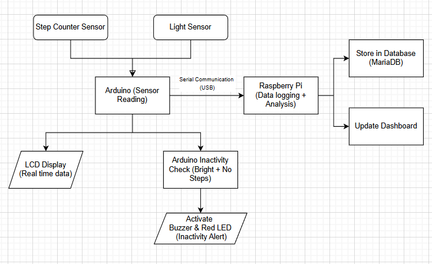
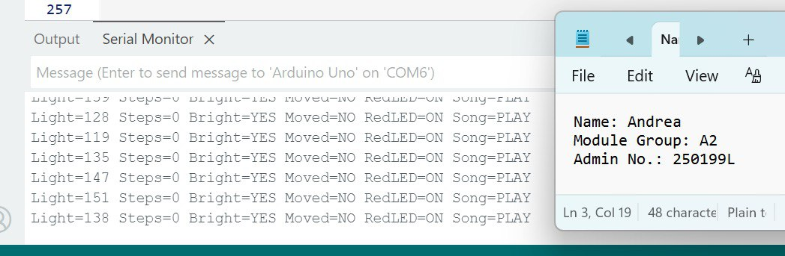
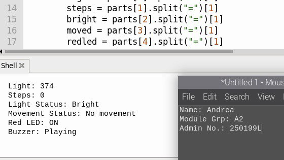
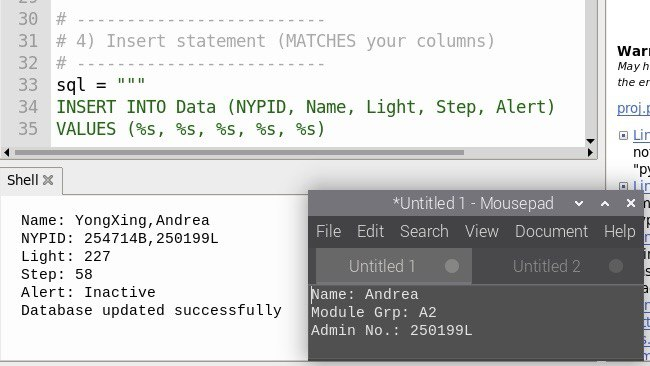
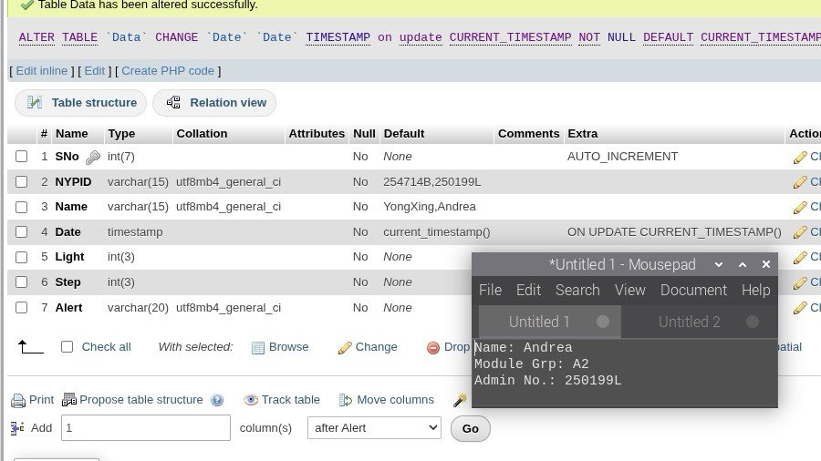

Step & Movement Tracking
A Grove step-counter sensor detects movement and tracks the user's step count.
02 / IOT & EMBEDDED SYSTEMS
An IoT wearable system that combines activity tracking, ambient-light sensing, inactivity alerts, Raspberry Pi processing, database logging and a Flask web interface.

PROJECT INFO
The Smart Fitness Band is a wearable IoT device developed to encourage healthier everyday habits by tracking user movement and ambient light conditions. A step counter monitors physical activity while a light sensor provides environmental context. By combining both readings, the system can distinguish between active periods, prolonged daytime inactivity and periods of rest or sleep.
WHAT THE SYSTEM DOES
A Grove step-counter sensor detects movement and tracks the user's step count.
A Grove light sensor measures environmental brightness so the system can distinguish daytime inactivity from low-light rest.
After 10 seconds without movement in a bright environment, the system activates a red LED and buzzer reminder.
When no movement occurs in a dark environment, the system suppresses alerts instead of treating the user as inactive.
The LCD displays current light and step information directly on the wearable prototype.
The Raspberry Pi stores readings in MariaDB and Flask provides browser-based access to the logged data.
SYSTEM DEVELOPMENT
The project connects embedded hardware, Python processing, database storage and a web interface into one IoT workflow.

The complete IoT workflow connects the step counter and light sensor to an Arduino. The Arduino handles sensor readings and inactivity logic, while a Raspberry Pi receives the processed data through serial communication. The Raspberry Pi logs the records in MariaDB and serves the data to a Flask web interface.

The Arduino continuously reports light level, step count, bright/dark status, movement detection, red LED state and buzzer state. The Serial Monitor screenshot shows a bright environment with no movement, causing the RedLED to switch ON and the alert song to play.

Python running on the Raspberry Pi receives and parses the Arduino serial data. The values are converted into readable information including light status, movement status, LED status and buzzer status.

A Python script inserts sensor readings into the MariaDB database. Each record includes the user, light reading, step count and an alert status. The screenshot confirms a successful database update.

The MariaDB table stores the project data with fields for timestamp, light level, step count and alert state, allowing the readings to be reviewed historically and displayed through the web application.
FINAL OUTCOME
The final demonstration shows the physical prototype, LCD output and system behaviour.
TESTING & RESULTS
Inactive alert triggered; buzzer/LED activated
Rest/sleep recognised; no alert triggered
Normal/active state; inactivity alert remains off
Alert stops and status returns to normal
Database updated and dashboard refreshed successfully
People who spend long periods studying, working at a desk or using digital devices may remain inactive without noticing it. Basic activity trackers may also treat legitimate rest or sleep as inactivity. The project therefore aimed to create a wearable monitoring system that could provide relevant activity alerts while reducing unnecessary notifications during low-light rest periods.
The Arduino reads step-count and ambient-light data and applies threshold-based logic to determine the user's status. When no movement is detected for 10 seconds in a bright environment, the red LED turns on and the buzzer plays an alert. When it is dark and there is no movement, the system assumes the user is resting or sleeping and suppresses the inactivity alert. Sensor information is sent by serial communication to a Raspberry Pi, stored in MariaDB and made available through a Flask web interface.
The completed prototype successfully demonstrated an end-to-end IoT workflow from sensing and embedded processing to Raspberry Pi communication, database storage and browser-based visualisation. All five documented test cases passed. The project also highlighted how combining multiple sensors can produce more meaningful activity decisions than relying on movement data alone.